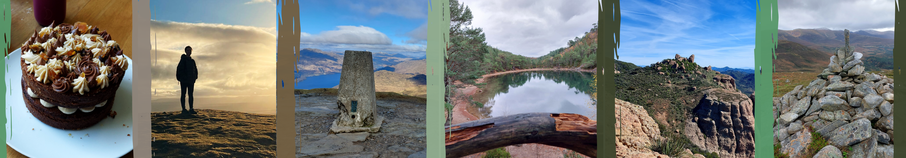
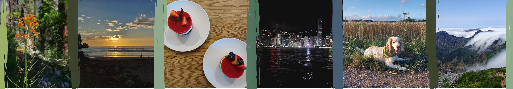
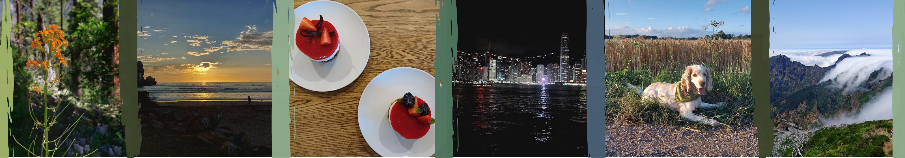
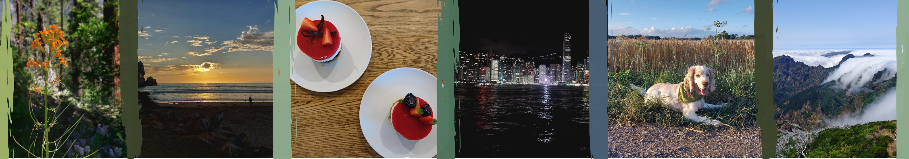
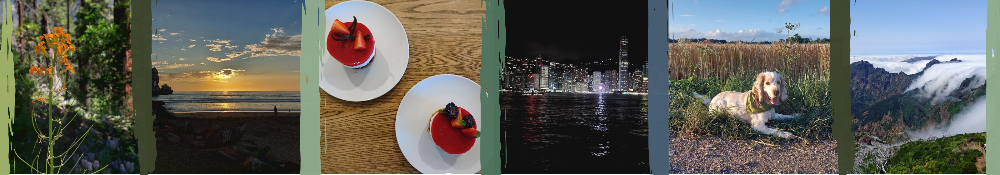

 



My name is Emma, and welcome to my little corner of the internet! Here, you will find a collection of projects I have completed that reflect my interests, ranging from university coursework to internships and personal endeavors.
I am currently a final-year Computational Physics student at the University of Edinburgh. Last year, I had the incredible opportunity to study at UCLA, where I took courses in machine learning, quantum mechanics, and differential equations. My interests lie at the intersection of computer science and physics, and I enjoy applying techniques like machine learning to physical systems, such as climate modeling, to uncover new insights. Additionally, I find cybersecurity and quantum computing fascinating, particularly when they are combined.
Throughout my university journey, I have been fortunate to intern in various computer science disciplines. One highlight was an internship focused on data compression for Large Language Models (LLMs). Over seven weeks, I implemented several algorithms, such as LZW and run-length encoding, however due to the large data size (roughly 12000 bits) and lack of element-wise repetition these attempts were unsuccessful. Therefore i explored entropy-based approaches and managed to calculate the compression limit as 92.1% and implement an algorithm that compressed the data to 92.4%. What intrigued me most about this internship was the connection to physics, being able to use my knowledge of entropy from thermodynamics and apply it to information theory was enlighting.
My undergraduate studies have primarily focused on physics, where I have delved into fundamental concepts and the associated mathematical principles, while also taking computer science courses. Although my computer science knowledge isn't as extensive, it has sparked my desire to pursue postgraduate studies with an emphasis on modeling and computational methods
Outside of academics, I enjoy baking, reading, and hiking; essentially anything outdoors! Over the past year, I have traveled across California and Hong Kong, experiencing some incredible sights. I look forward to what the future holds and am excited to continue exploring my passions and the world around me
Please feel free to get in touch; the best way is via Linkedin